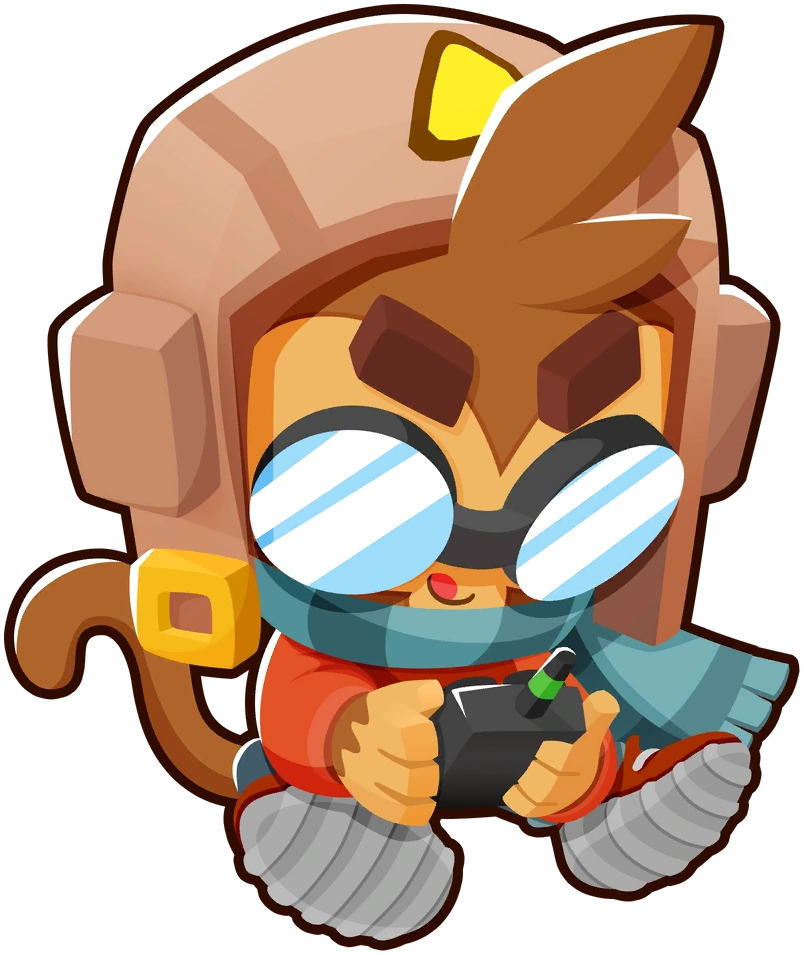

Los héroes en Bloons TD 6
-
Quincy
Un héroe confiable, es con quien empiezas y él es especialmente fuerte debido a que tiene el precio más bajo de todos los héroes, mientras aun siendo muy útil durante todo el juego.
Wiki de Quincy -
Obyn Greenfoot

Obyn es otro héroe muy útil, ya que él se especializa en darle poderes extra a los monos mágicos.
Wiki de Obyn -
Gwendolin
Una heroína muy fuerte, se centra en el poder del fuego y tiene un daño muy alto.
Wiki de Gwendolin -
Striker Jones
Es el héroe más débil de todos sin la estrategia correcta, pero cuando lo juntas con ciertos monos puede demoler con facilidad en casi cualquier mapa.
Wiki de Striker Jones -
Sauda

Es la heroína preferida para poder vencer el comienzo de los juegos, la recomiendo como la primera compra debido a que tiene alto daño, la puedes poner desde ronda 1 y tiene habilidades que atacan en cualquier lugar del mapa.
Wiki de Sauda -
Etienne
Uno de los héroes más poderosos en las rondas altas, debido a que permite a todos los monos ver globos camuflados y tiene habilidades globales así como drones que atacan a los globos.
Wiki de Etienne